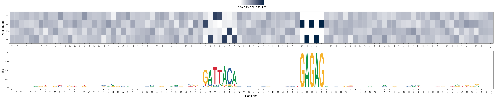
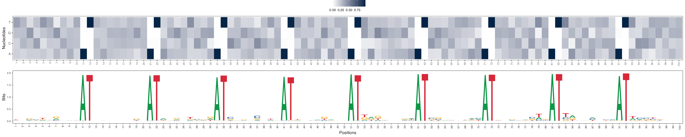
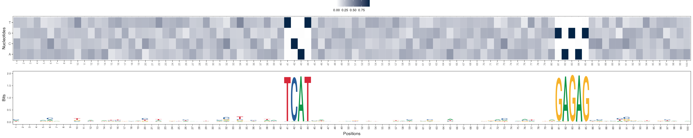
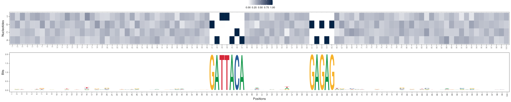
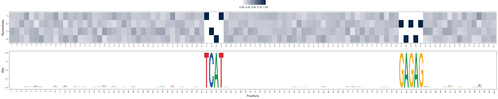

Example usage of seqArchR on simulated DNA sequences
Sarvesh Nikumbh
2022-09-27
Source:vignettes/seqArchR.Rmd
seqArchR.RmdIntroduction
seqArchR is a non-negative matrix factorization (NMF)-based unsupervised learning approach for identifying different core promoter sequence architectures. seqArchR implements an algorithm based on chunking and iterative processing. While matrix factorization-based applications are known to scale poorly for large amounts of data, seqArchR’s algorithm enables scalable processing of large number of sequences. A notable advantage of seqArchR is that the sequence motifs – the lengths and positional specificities of individual motifs, and complex inter-relationships where multiple motifs are at play in tandem, all are simultaneously inferred from the data. To our knowledge, this is a novel application of NMF on biological sequence data capable of simultaneously discovering the sequence motifs and their positions. For a more detailed discussion, see preprint/publication.
This vignette demonstrates seqArchR’s usage with the help of a synthetic DNA sequences data set. Please refer to the paper for a detailed description of seqArchR’s algorithm. The paper also discusses the various parameters and their settings. For completeness, the following section gives a brief overview of the algorithm.
seqArchR’s algorithm
seqArchR implements a chunking-based iterative procedure. Below is a schematic of seqArchR’s algorithm.

Further details to follow.
Installation
Python scikit-learn dependency
seqArchR requires the Python module scikit-learn. Please see installation instructions here.
seqArchR is available on Bioconductor, and can be installed using:
if (!require("BiocManager", quietly = TRUE))
install.packages("BiocManager")
BiocManager::install("seqArchR")In case of any errors, please consider looking up: https://github.com/snikumbh/seqArchR. If none of the already noted points with regards to troubleshooting seqArchR’s installation help, please file a new issue.
Working with seqArchR
# Load seqArchR
library(seqArchR)
library(Biostrings, quietly = TRUE)
#>
#> Attaching package: 'BiocGenerics'
#> The following objects are masked from 'package:stats':
#>
#> IQR, mad, sd, var, xtabs
#> The following objects are masked from 'package:base':
#>
#> anyDuplicated, append, as.data.frame, basename, cbind, colnames,
#> dirname, do.call, duplicated, eval, evalq, Filter, Find, get, grep,
#> grepl, intersect, is.unsorted, lapply, Map, mapply, match, mget,
#> order, paste, pmax, pmax.int, pmin, pmin.int, Position, rank,
#> rbind, Reduce, rownames, sapply, setdiff, sort, table, tapply,
#> union, unique, unsplit, which.max, which.min
#>
#> Attaching package: 'S4Vectors'
#> The following objects are masked from 'package:base':
#>
#> expand.grid, I, unname
#>
#> Attaching package: 'Biostrings'
#> The following object is masked from 'package:base':
#>
#> strsplit
# Set seed for reproducibility
set.seed(1234)Synthetic data explained
In order to demonstrate the efficacy of seqArchR, we use seqArchR to cluster DNA sequences in a synthetic data set which was generated as follows. A set of 200 simulated DNA sequences was generated, each 100 nucleotides long and with uniform probability for all nucleotides. These sequences have four clusters in them, each with 50 sequences. The profiles of the four clusters are:
| Cluster | Characteristic Motifs | Motif Occurrence Position | #Sequences |
|---|---|---|---|
| A | Dinucleotide repeat AT
|
every 10 nt | 50 |
| B | GATTACA |
40 | 50 |
GAGAG |
60 | ||
| C | GAGAG |
60 | 50 |
| D | GAGAG |
80 | 50 |
TCAT |
40 |
All the motifs across the clusters were planted with a mutation rate of 0.
Input and feature representation
We use one-hot encoding to represent the dinucleotide profiles of each sequence in the data set. seqArchR provides functions to read input from (a) a FASTA file, and (b) Biostrings::DNAStringSet object.
Reading input as FASTA file
The function seqArchR::prepare_data_from_FASTA() enables one-hot-encoding the DNA sequences in the given FASTA file. The one-hot-encoded sequences are returned as a sparse matrix with as many columns as the number of sequences in the FASTA file and (sequence length x \(4^{2}\)) rows when dinucleotide profiles is selected. The number of rows will be (sequence length x \(4\)) when mononucleotide profiles is selected. See the sinuc_or_dinuc argument.
Upon setting the logical argument rawSeq to TRUE, the function returns the raw sequences as a Biostrings::DNAStringSet object, with FALSE it returns the column-wise one-hot encoded representation as noted above. When raw_seq is TRUE, sinuc_or_dinuc argument is ignored.
# Creation of one-hot encoded data matrix from FASTA file
inputFname <- system.file("extdata", "example_data.fa.gz",
package = "seqArchR",
mustWork = TRUE)
# Specifying `dinuc` generates dinucleotide features
inputSeqsMat <- seqArchR::prepare_data_from_FASTA(fasta_fname = inputFname,
sinuc_or_dinuc = "dinuc")
#> Sequences OK,
#> Read 200 sequences
#> Generating dinucleotide profiles
inputSeqsRaw <- seqArchR::prepare_data_from_FASTA(fasta_fname = inputFname,
raw_seq = TRUE)
nSeqs <- length(inputSeqsRaw)
positions <- seq(1, Biostrings::width(inputSeqsRaw[1]))Reading input as a DNAStringSet object
If you already have a Biostrings::DNAStringSet object, you can use the seqArchR::get_one_hot_encoded_seqs() function which directly accepts a Biostrings::DNAStringSet object.
# Creation of one-hot encoded data matrix from a DNAStringSet object
inputSeqs_direct <- seqArchR::get_one_hot_encoded_seqs(seqs = inputSeqsRaw,
sinuc_or_dinuc = "dinuc")
#> Generating dinucleotide profiles
identical(inputSeqs_direct, inputSeqsMat)
#> [1] TRUEVisualize input sequences as an image
# Visualize the sequences in a image matrix where the DNA bases are
# assigned fixed colors
seqArchR::viz_seqs_acgt_mat(as.character(inputSeqsRaw),
pos_lab = positions, save_fname = NULL)Calling seqArchR
Setup seqArchR configuration as follows.
# Set seqArchR configuration
seqArchRconfig <- seqArchR::set_config(
parallelize = TRUE,
n_cores = 2,
n_runs = 100,
k_min = 1,
k_max = 20,
mod_sel_type = "stability",
bound = 10^-6,
chunk_size = 100,
result_aggl = "ward.D",
result_dist = "euclid",
flags = list(debug = FALSE, time = TRUE, verbose = TRUE,
plot = FALSE)
)Once the configuration is setup, call the seqArchR::seqArchR() function with user-specified number of iterations.
Understanding the result object from seqArchR
In the version 1.1.0, seqArchR naively returns a result object which is a nested list of seven elements. These include:
- the sequence cluster labels per iteration [
seqsClustLabels]; - the collection of NMF basis vectors per iteration [
clustBasisVectors]: each is a list of two elementsnBasisVectorsandbasisVectors; - the clustering solution, [
clustSol], which is obtained upon combining raw clusters from the last iteration of seqArchR. This element stores the clustering of NMF basis vectors [basisVectorsClust] and the sequence clusters [clusters]; - the raw sequences provided [
rawSeqs]; - if timeFlag is set, timing information (in minutes) per iteration [
timeInfo]; - the configuration setting [
config]; and - the call itself [
call].
NMF basis vectors
seqArchR stores the NMF basis vectors corresponding to each cluster in every iteration in the variable clustBasisVectors. clustBasisVectors is a numbered list corresponding to the number of iterations performed. This is then again a list holding two pieces of information: the number of basis vectors (nBasisVectors) and the basis vectors (basisVectors).
# Basis vectors at iteration 2
seqArchR::get_clBasVec_k(seqArchRresult, iter=2)
#> [1] 4
i2_bv <- seqArchR::get_clBasVec_m(seqArchRresult, iter=2)
dim(i2_bv)
#> [1] 1600 4
head(i2_bv)
#> [,1] [,2] [,3] [,4]
#> [1,] 0.120740995 0.07407753 0.05168607 0.08186580
#> [2,] 0.087066440 0.08679174 0.02486037 0.07917296
#> [3,] 0.080389797 0.03793642 0.05076204 0.05196331
#> [4,] 0.074610342 0.04276400 0.09945618 0.05334238
#> [5,] 0.080347189 0.11747636 0.07484865 0.10758754
#> [6,] 0.007201571 0.11872570 0.05051104 0.10543655The NMF basis vectors can be visualized as a heatmap and/or sequence logo using viz_bas_vec_heat_seqlogo function.
Basis vectors at iteration 1
seqArchR::viz_bas_vec(feat_mat = get_clBasVec_m(seqArchRresult, 1),
ptype = c("heatmap", "seqlogo"), method = "bits",
sinuc_or_dinuc = "dinuc")
#> Warning: `guides(<scale> = FALSE)` is deprecated. Please use `guides(<scale> =
#> "none")` instead.
#> Scale for 'x' is already present. Adding another scale for 'x', which will
#> replace the existing scale.
#> Warning: `guides(<scale> = FALSE)` is deprecated. Please use `guides(<scale> =
#> "none")` instead.
#> Scale for 'x' is already present. Adding another scale for 'x', which will
#> replace the existing scale.
#> Warning: `guides(<scale> = FALSE)` is deprecated. Please use `guides(<scale> =
#> "none")` instead.
#> Scale for 'x' is already present. Adding another scale for 'x', which will
#> replace the existing scale.
#> [[1]]
#>
#> [[2]]
#>
#> [[3]]
Basis vectors at iteration 2
seqArchR::viz_bas_vec(feat_mat = get_clBasVec_m(seqArchRresult, 2),
ptype = c("heatmap", "seqlogo"), method = "bits",
sinuc_or_dinuc = "dinuc")
#> Scale for 'x' is already present. Adding another scale for 'x', which will
#> replace the existing scale.
#> Scale for 'x' is already present. Adding another scale for 'x', which will
#> replace the existing scale.
#> Scale for 'x' is already present. Adding another scale for 'x', which will
#> replace the existing scale.
#> Scale for 'x' is already present. Adding another scale for 'x', which will
#> replace the existing scale.
#> [[1]]
#>
#> [[2]]
#>
#> [[3]]
#>
#> [[4]]
Visualize sequences by clusters
The clustered output from seqArchR can again be visualized as a matrix. Use the https://snikumbh.github.io/seqArchR/reference/seqs_str.html function to fetch sequences by clusters at any iteration and call seqArchR::viz_seqs_as_acgt_mat as shown.
seqArchR::viz_seqs_acgt_mat(seqs_str(seqArchRresult, iter = 1, ord = TRUE),
pos_lab = positions)
Clusters at iteration 1
seqArchR::viz_seqs_acgt_mat(seqs_str(seqArchRresult, iter = 2, ord = TRUE),
pos_lab = positions)
Clusters at iteration 2
Conclusion
seqArchR can detect de novo sequence features and simultaneously identify the complex interactions of different features together with their positional specificities.
Note that the sequence architectures identified by seqArchR have no limitations due to the size of the motifs or gaps in them, distance between motifs, compositional and positional variations in the individual motifs and their effects on the complex interactions, and number of motifs involved in any interaction.
Session Info
sessionInfo()
#> R version 4.2.1 (2022-06-23)
#> Platform: x86_64-apple-darwin17.0 (64-bit)
#> Running under: macOS Big Sur ... 10.16
#>
#> Matrix products: default
#> BLAS: /Library/Frameworks/R.framework/Versions/4.2/Resources/lib/libRblas.0.dylib
#> LAPACK: /Library/Frameworks/R.framework/Versions/4.2/Resources/lib/libRlapack.dylib
#>
#> locale:
#> [1] en_US.UTF-8/en_US.UTF-8/en_US.UTF-8/C/en_US.UTF-8/en_US.UTF-8
#>
#> attached base packages:
#> [1] stats4 stats graphics grDevices utils datasets methods
#> [8] base
#>
#> other attached packages:
#> [1] Biostrings_2.64.1 GenomeInfoDb_1.32.4 XVector_0.36.0
#> [4] IRanges_2.30.1 S4Vectors_0.34.0 BiocGenerics_0.42.0
#> [7] seqArchR_1.1.0 BiocStyle_2.24.0
#>
#> loaded via a namespace (and not attached):
#> [1] Rcpp_1.0.9 lattice_0.20-45 prettyunits_1.1.1
#> [4] ggseqlogo_0.1 rprojroot_2.0.3 digest_0.6.29
#> [7] utf8_1.2.2 plyr_1.8.7 R6_2.5.1
#> [10] evaluate_0.16 highr_0.9 ggplot2_3.3.6
#> [13] pillar_1.8.1 zlibbioc_1.42.0 rlang_1.0.6
#> [16] jquerylib_0.1.4 Matrix_1.4-1 rmarkdown_2.16
#> [19] pkgdown_2.0.6 labeling_0.4.2 textshaping_0.3.6
#> [22] desc_1.4.2 BiocParallel_1.30.3 stringr_1.4.1
#> [25] RCurl_1.98-1.8 munsell_0.5.0 compiler_4.2.1
#> [28] xfun_0.33 pkgconfig_2.0.3 systemfonts_1.0.4
#> [31] htmltools_0.5.3 tibble_3.1.8 GenomeInfoDbData_1.2.8
#> [34] bookdown_0.29 codetools_0.2-18 fansi_1.0.3
#> [37] crayon_1.5.1 bitops_1.0-7 grid_4.2.1
#> [40] jsonlite_1.8.0 gtable_0.3.1 lifecycle_1.0.2
#> [43] magrittr_2.0.3 scales_1.2.1 cli_3.4.1
#> [46] stringi_1.7.8 cachem_1.0.6 farver_2.1.1
#> [49] reshape2_1.4.4 fs_1.5.2 bslib_0.4.0
#> [52] ragg_1.2.2 vctrs_0.4.1 cowplot_1.1.1
#> [55] tools_4.2.1 glue_1.6.2 purrr_0.3.4
#> [58] parallel_4.2.1 fastmap_1.1.0 yaml_2.3.5
#> [61] colorspace_2.0-3 BiocManager_1.30.18 memoise_2.0.1
#> [64] knitr_1.40 sass_0.4.2